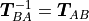
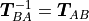
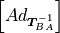
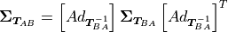
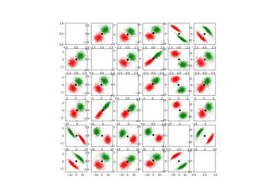

pytransform3d.uncertainty.invert_uncertain_transform¶
- pytransform3d.uncertainty.invert_uncertain_transform(mean, cov)[source]¶
Invert uncertain transform.
For the mean
 , the inverse is simply
.
, the inverse is simply
.For the covariance, we need the adjoint of the inverse transformation :

- Parameters:
- meanarray-like, shape (4, 4)
Mean of transform from frame A to frame B.
- covarray, shape (6, 6)
Covariance of transform from frame A to frame B in exponential coordinate space.
- Returns:
- mean_invarray, shape (4, 4)
Mean of transform from frame B to frame A.
- cov_invarray, shape (6, 6)
Covariance of transform from frame B to frame A in exponential coordinate space.
References
Mangelson, Ghaffari, Vasudevan, Eustice: Characterizing the Uncertainty of Jointly Distributed Poses in the Lie Algebra, https://arxiv.org/pdf/1906.07795.pdf
Examples using pytransform3d.uncertainty.invert_uncertain_transform¶

Invert Uncertain Transform